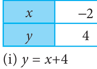
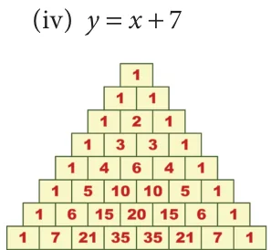
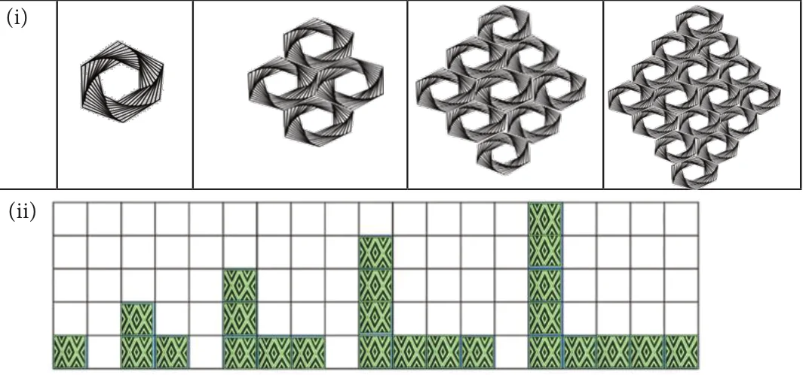
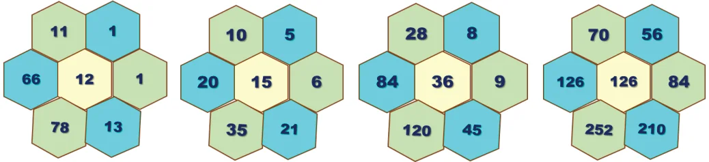

- 1.Choose the correct relationship between x and y from the given table.

\(- - 1 0 1 2\) ... 5 6 7 8 ...
- (ii)\(y = x + 5\) (iii) \(y = x + 6 = +\)

- 2.Find the trianglular numbers from the Pascal’s Triangle and
colour them.
- 3.Write the first five numbers in the third slanting row of the Pascal’s Triangle and find
their squares. What do you infer?
Challenge Problems
- 4.Tabulate and find the relationship between the variables (x and y) for the following
patterns.

- 5.Verify whether the following hexagonal shapes form a part of the Pascal’s Triangle.
